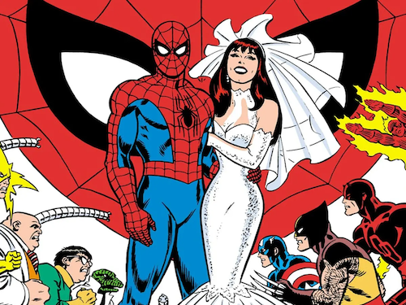
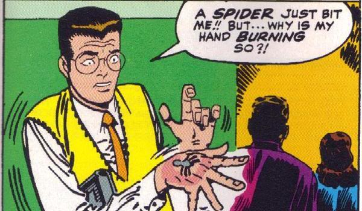
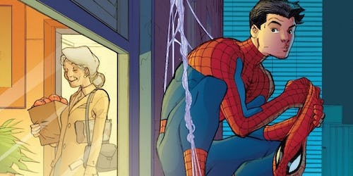
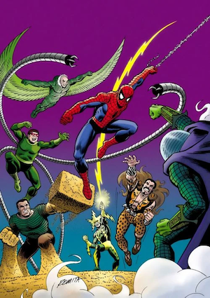
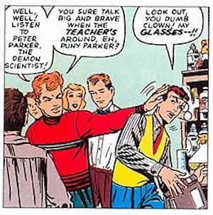

Arguably Marvel Comic’s most iconic character is Spider-Man. Famously co-created by Stan Lee
(editor-in-Chief), Steve Ditko (co-writer and co-artist) and Jack Kirby (Artist). The first time Spider-man
appeared was on August 10th, 1962, on the cover of the fifteenth issue of ‘Amazing Fantasy’. Originally the
series was called ‘Amazing Adventures’ which then changed to ‘Amazing Adult Fantasy’ as they were trying to
attract a more mature audience.
During the same year, Spider-man was released to the public on June 5th,
which perhaps had such a big impact, it changed the reputation of the superhero/comic book industry forever
as well as shaped the style of other Marvel characters for decades. More importantly, teaching us that
superheroes can be ordinary people, with ordinary problems

Artwork done by John Romita, who passed away June 13th, 2023.
A New Look To Spidey
John Romita created a more 'bright and friendly' look to Spider-Man, which was opposite to Ditko’s famous
dark, creepy-crawly style. Romita took Spider-Man out of the shadows and placed him in a new brave and
bright world. On November 1st, 1966, ‘The Amazing Spider-Man’ issue forty-two was released, which is
debatably “The finest single panel of comics work ever produced.” (David Barnett – 2023) On the final page
in the issue, we are introduced to our hero’s love interest Mary Jane Watson, who is gleaming in a yellow
blur of surprise with the famous line: “Face it, Tiger … you just hit the jackpot!”
The Man With the Mask
Every superhero has an identity. Spider-Man without the suit is Peter Parker, a fifteen year old American
teenager born
and raised in Queens, New York City. His parents were killed when he was young, and he has lived with his
aunt
and uncle since. Peter can be described as timid, shy, and nerdy, pretty much the opposite of his ‘super
alter-ego’. Peter got his powers from a radio-active spider during a school field trip to a science
facility,
which bit him on the hand.

Shortly after discovering his powers his uncle Ben was shot in cold blood on the
street. The last thing his uncle Ben told him before he passed was “With great power, comes great
responsibility.” Because of this, Peter chooses to hide his identity to protect his loved ones.
One of the biggest struggles Peter continuously has is balancing his Spider-Man life with his personal life.

Knowledge and Skills
Besides his superpowers, Peter is a genius, being a brilliant chemist and scientist. Pete has advanced his
powers through technology, creating web slingers which enhance his web shooting ability, as well as his
electrified blasters which shoot large blasts of energy at enemies to stun them.
Spider-Man stands out the most compared to other heroes because he is the first teenager to become a main
character superhero. Before Spider-Man, teenagers were only sidekicks. Being that he is a teenager, with the
fact that he has a secret identity, he was one of the few characters which had a normal life. Making Peter
Parker one of the most relatable characters in the MCU.
Enemies and Allies

Spider-man has a vast number of enemies, basically anyone who has a criminal background in New York City
wants to exterminate the Spider. Although there is a group of villains which are most famously known to be
Spider-Mans arch enemies. This group goes by the name: The Sinister Six. The group originally includes
Electro, Sandman, Dr. Octopus, Vulture, Mysterio, and Kraven the Hunter. Though fan favourite villains
include Green Goblin, Venom, and my personal favourite: Carnage.
Mind you, there are many different versions of Spider-Man, his background, and the Sinister Six members. I’m
referring to the original comics which came out in the 60s.
Peter has a very small circle of people who he’s close with, since he’s an only child and his parents and uncle Ben have all passed away. Aunt May is the only guardian Peter has, who he’s very close with.
His best friend goes by the name of Harry Osborne, and his love interest is Mary Jane Watson, his neighbour. Spider-man isn’t the only one with enemies, throughout his high school and college life, Pete is bullied by another student named Flash Thompson.

Spidey Quotes
“This is my gift, my curse. Who am I? I’m Spider-Man.” 2002 Spider-Man Film Directed by Sam Raimi
“When there seems to be no chance, that’s when it counts!” Amazing Spider-Man (Vol. 1) #33, by Stan
Lee, Steve Ditko, and Artie Simek
“Playing superhero isn’t a game. It’s fate. We choose to do good. Choose to do bad. We had a choice”
Spider-Man (Vol. 1) #7 by Todd McFarlane, Gregory Wright, and Jim Novak
“Yes. I’m Batman.” Runaways (Vol 2) #11 by Brian K. Vaughan, Adrian Alphona, Craig Yeung, Christina
Strain, and Randy Gentile


{kind=link}
{kind=link}
{kind=link}
{kind=link}
{kind=link}
{kind=link}
{kind=link}
{kind=link}
{kind=link}